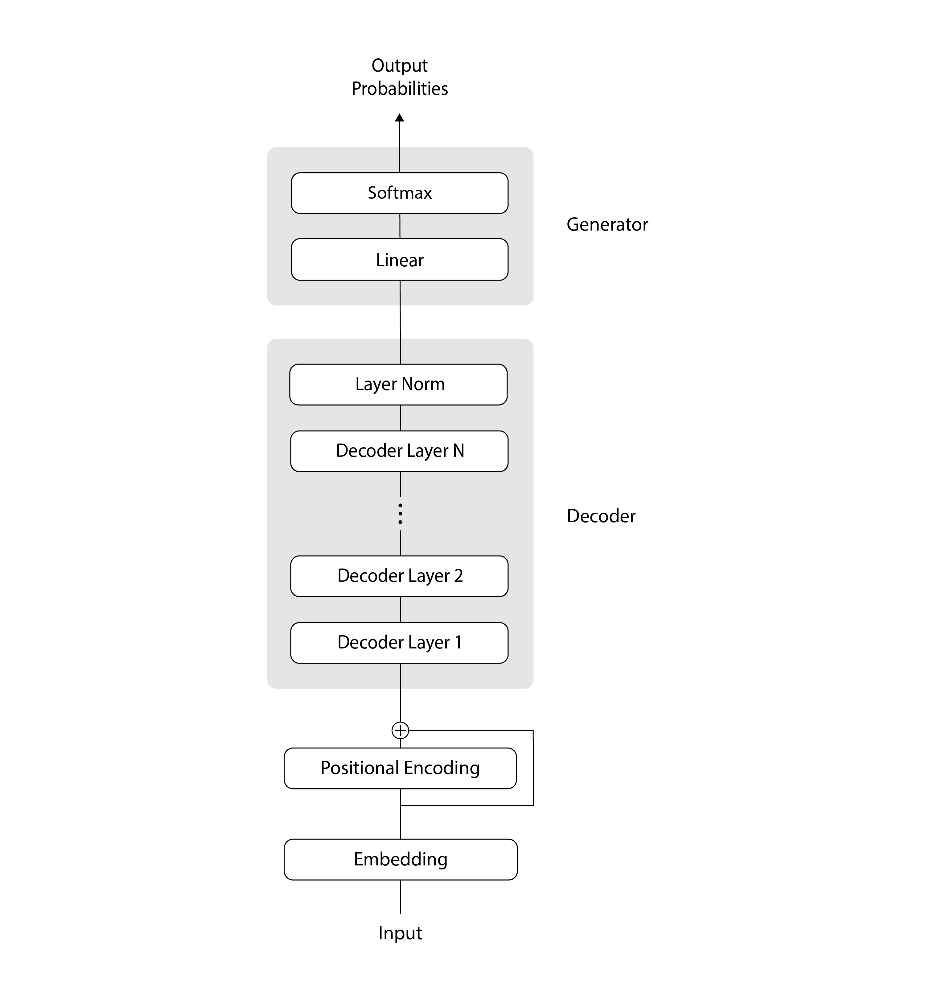
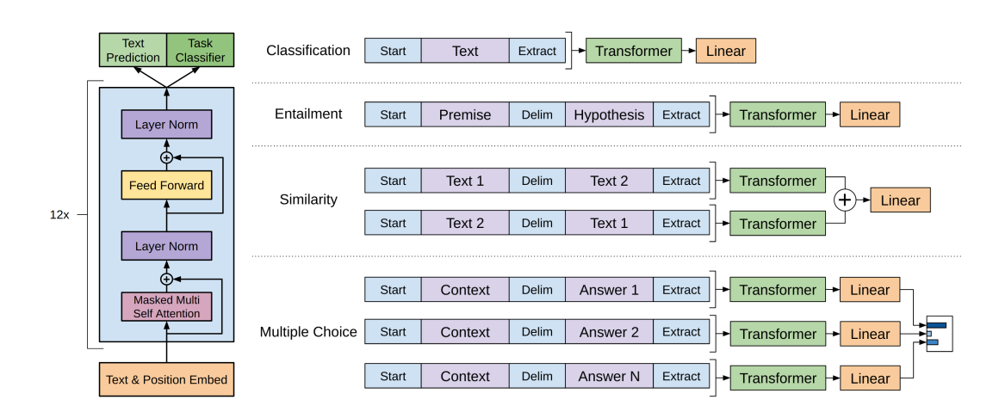
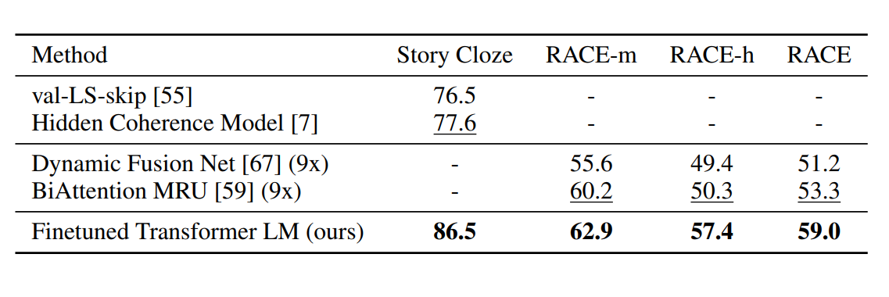
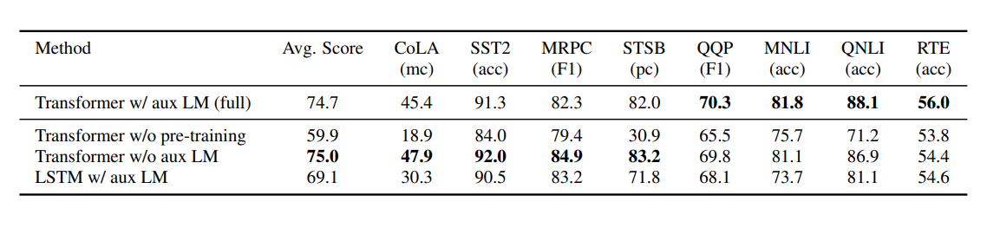

1. Tóm tắt (Executive Summary)

Bối cảnh (Background)
- Tư duy Task-specific thống trị: Ngành NLP bị kìm hãm bởi việc thiết kế các hệ thống AI chuyên biệt, phụ thuộc hoàn toàn vào kiến trúc và dữ liệu gán nhãn riêng cho từng nhiệm vụ.
- Không thể tái sử dụng: Một mô hình được huấn luyện cho tác vụ này (ví dụ: phân loại văn bản) gần như không thể áp dụng cho tác vụ khác (ví dụ: trả lời câu hỏi).
- Rào cản mở rộng: Sự thiếu vắng cơ chế hiểu ngôn ngữ tổng quát buộc người học phải thiết kế lại cấu trúc mô hình từ đầu cho mỗi bài toán mới, gây tốn kém chi phí.
Giải pháp cốt lõi (Core Solution)
- Phương pháp Generative Pre-Training (GPT): Đề xuất quy trình hai giai đoạn độc lập thay vì huấn luyện riêng biệt từ đầu:
- Tiền huấn luyện không giám sát (Unsupervised Pre-training): Học cấu trúc sâu sắc của ngôn ngữ từ khối lượng khổng lồ văn bản chưa gắn nhãn.
- Tinh chỉnh có giám sát (Supervised Fine-tuning): Thích ứng mô hình đã học sang các tác vụ chuyên biệt bằng tập dữ liệu nhỏ đã gắn nhãn.
Tác động thực tiễn (Practical Impact)
- Tối giản kiến trúc: Cho phép một cấu trúc mô hình duy nhất xử lý đa dạng tác vụ với những thay đổi tối thiểu.
- Bước chuyển dịch cách mạng: Thay đổi tư duy từ "xây dựng mô hình mới cho mỗi bài toán" sang "huấn luyện một mô hình tổng quát để hiểu ngôn ngữ, sau đó tái sử dụng linh hoạt".
2. Mục đích nghiên cứu (Goals of the Paper)
Động lực nghiên cứu (Motivation)
- Khan hiếm dữ liệu nhãn: Các mô hình đương thời phụ thuộc nặng nề vào dữ liệu gán nhãn thủ công – nguồn tài nguyên vốn tốn kém và thường không đủ cho các tác vụ đặc thù.
- Kiến trúc cô lập: Các mô hình thường được thiết kế "đo ni đóng giày" cho một tác vụ duy nhất, không có khả năng thích ứng hoặc tái sử dụng.
Mục tiêu cụ thể (Specific Objectives)
- Tận dụng dữ liệu thô: Chuyển dịch sang phương pháp tổng quát, khai thác nguồn văn bản thô vô tận trên Internet để học các biểu diễn ngôn ngữ chất lượng cao.
- Hiện thực hóa Học chuyển giao (Transfer Learning): Khai thác tri thức nền tảng từ giai đoạn tiền huấn luyện không giám sát để áp dụng hiệu quả vào các tác vụ đích.
- Tối ưu hiệu suất và kiến trúc: Nâng cao kết quả trên nhiều bài toán NLP (QA, suy luận logic, phân loại...) mà không cần thiết kế lại cấu trúc mạng neuron cho từng bài toán đó.
3. GPT Framework
3.1 Tiền huấn luyện không giám sát (Unsupervised Pre-training)
- Mục tiêu: Giúp mô hình học kiến thức nền tảng và cấu trúc của ngôn ngữ (vocabulary, grammar, …).
- Nhiệm vụ cốt lõi: Mô hình hóa ngôn ngữ tiêu chuẩn (Standard Language Modeling) – Nhìn các từ đi trước để đoán từ tiếp theo trên một tập văn bản thô $U = \{u_1, \ldots, u_n\}$.
- Hàm mục tiêu (Loss Function): Tối đa hóa hàm xác suất log-likelihood: $$L_1(U) = \sum_{i} \log P(u_i \mid u_{i-k}, \ldots, u_{i-1}; \Theta)$$ (Trong đó: $k$ là kích thước cửa sổ ngữ cảnh, $\Theta$ là các tham số mạng neuron).
- Luồng xử lý dữ liệu qua kiến trúc Transformer Decoder:
- Bước 1 (Nhúng dữ liệu): Biến đổi chuỗi từ đầu vào $U$ thành các vector số bằng cách cộng token embedding matrix ($W_e$) với position embedding matrix ($W_p$): $$h_0 = UW_e + W_p$$
- Bước 2 (Xử lý sâu): Đẩy vector qua $n$ tầng Transformer Decoder với cơ chế tự chú ý đa đầu (multi-headed self-attention) để học mối quan hệ giữa các từ: $$h_l = \text{transformer\_block}(h_{l-1}) \quad \forall l \in [1, n]$$
- Bước 3 (Đầu ra): Sử dụng hàm softmax tại tầng cuối cùng với vector trạng thái $h_n$ để tính xác suất và tìm ra từ tiếp theo phù hợp nhất: $$P(u) = \text{softmax}(h_n W_e^T)$$

3.2 Tinh chỉnh có giám sát (Supervised Fine-tuning)
- Mô tả: Sau khi có "nền tảng ngôn ngữ", mô hình được chuyển sang học các tác vụ chuyên biệt (như phân loại văn bản, trả lời câu hỏi) bằng tập dữ liệu nhỏ đã gán nhãn sẵn $C$ (gồm đầu vào $x^1, \ldots, x^m$ và nhãn $y$).
- Cơ chế dự đoán: Chuỗi đầu vào được đưa qua mô hình GPT đã pre-train. Ta lấy vector trạng thái đầu ra tại vị trí từ cuối cùng ($h_m^l$) của tầng Transformer cuối cùng, đưa qua một tầng tuyến tính bổ sung (Linear layer) mới với tham số $W_y$ để dự đoán nhãn $y$: $$P(y \mid x^1, \ldots, x^m) = \text{softmax}(h_m^l W_y)$$
- Hàm mục tiêu tối ưu chính: Tối đa hóa xác suất đoán đúng nhãn $y$: $$L_2(C) = \sum_{(x,y)} \log P(y \mid x^1, \ldots, x^m)$$
- Cải tiến bằng mục tiêu phụ trợ (Auxiliary Objective): Các tác giả phát hiện nếu chỉ tối ưu mỗi nhiệm vụ đoán nhãn ($L_2$), mô hình dễ bị quá khớp (overfitting).
- Giải pháp: Giữ lại nhiệm vụ đoán từ tiếp theo ($L_1$) làm nhiệm vụ phụ trợ ngay lúc tinh chỉnh cùng trọng số $\lambda$: $$L_3(C) = L_2(C) + \lambda \cdot L_1(C)$$
- Lợi ích: Giúp mô hình tổng quát hóa tốt hơn trên dữ liệu mới và đẩy nhanh tốc độ hội tụ khi huấn luyện (improving generalization & accelerating convergence).
4. Task-specific Input Transformations & Results
Để áp dụng cho các tác vụ có cấu trúc đầu vào đa dạng mà không phải thay đổi kiến trúc mạng, GPT-1 làm phẳng mọi đầu vào phức tạp thành một chuỗi duy nhất, phân tách bằng các mã token đặc biệt: Bắt đầu (<s>), Kết thúc (<e>), và Phân tách ($).

4.1 Tác vụ Suy luận hệ quả (Natural Language Inference - NLI)
- Cách biến đổi đầu vào: Nối chuỗi Tiền đề ($p$) và Giả thuyết ($h$) lại với nhau, ngăn cách bằng token phân tách ($): $$\text{[\<s\>; } p \text{; \$; } h \text{; \<e\>]}$$
- Ví dụ minh họa:
- Tiền đề ($p$): "Đêm nay trời đổ mưa rất to."
- Giả thuyết ($h$): "Đường phố có thể bị ngập."
- Đầu vào sau biến đổi:
[<s>; Đêm nay trời đổ mưa rất to. ; $ ; Đường phố có thể bị ngập. ; <e>]
- Chú thích Benchmark/Dataset: MNLI, RTE, QNLI.

4.2 Tác vụ trả lời câu hỏi và Suy luận thực tế (QA & Commonsense Reasoning)
- Cách biến đổi đầu vào: Nối ngữ cảnh ($z$) và câu hỏi ($q$) với từng câu trả lời ứng viên $a_k$ độc lập: $$\text{[\<s\>; } z \text{; } q \text{; \$; } a_k \text{; \<e\>]}$$
- Ví dụ minh họa:
- Ngữ cảnh ($z$): "Hải là một sinh viên CNTT."
- Câu hỏi ($q$): "Hải dùng gì để lập trình?"
- Đáp án ứng viên: $a_1$: "Laptop", $a_2$: "Máy hút bụi".
- Đầu vào chuỗi 1:
[<s>; Hải là một sinh viên CNTT. ; Hải dùng gì để lập trình? ; $ ; Laptop ; <e>]
- Chú thích Benchmark/Dataset: RACE, Story Cloze.

4.3 Tác vụ Đánh giá độ tương đồng văn bản & Phân loại văn bản (Semantic Similarity & Text Classification)
- Độ tương đồng — Cách biến đổi đầu vào: Tạo hai chuỗi đảo vị trí và cộng kết quả element-wise: $$\text{Chuỗi 1: [\<s\>; } Text_1 \text{; \$; } Text_2 \text{; \<e\>]}$$ $$\text{Chuỗi 2: [\<s\>; } Text_2 \text{; \$; } Text_1 \text{; \<e\>]}$$
- Phân loại — Cách biến đổi đầu vào: $$\text{[\<s\>; Văn bản; \<e\>]}$$
- Ví dụ minh họa:
- Độ tương đồng C1: "Cách này hiệu quả." C2: "Làm vậy kết quả tốt."
- Đầu vào độ tương đồng:
[<s>; Cách này hiệu quả. ; $ ; Làm vậy kết quả tốt. ; <e>] - Đầu vào phân loại:
[<s>; Bộ phim này rất xuất sắc. ; <e>]
- Chú thích Benchmark/Dataset: MRPC, STS-B, CoLA, SST-2.

5. Phân tích thực nghiệm (Analysis & Ablation Study)
- Số lượng tầng chuyển giao: Hiệu suất tăng tỉ lệ thuận với số lượng tầng Transformer được tái sử dụng từ giai đoạn pre-training.
- Năng lực Zero-shot: Mô hình tự phát triển khả năng giải quyết tác vụ cơ bản ngay trong giai đoạn pre-training không giám sát.
- Ablation Study:
- Không có $L_1$ (auxiliary loss) khi fine-tuning làm giảm hiệu suất các tác vụ phức tạp.
- Transformer vượt trội hơn LSTM trung bình 5.6 điểm nhờ khả năng học ngữ cảnh tầm xa tốt hơn.


6. Kết luận (Conclusion)
GPT-1 đã đặt nền móng cho kỷ nguyên của các mô hình ngôn ngữ lớn (LLMs) bằng cách chứng minh rằng việc tiền huấn luyện trên dữ liệu khổng lồ, kết hợp với kiến trúc Transformer và tinh chỉnh có giám sát, có thể tạo ra một hệ thống hiểu ngôn ngữ tổng quát mạnh mẽ vượt xa các mô hình chuyên biệt trước đó.